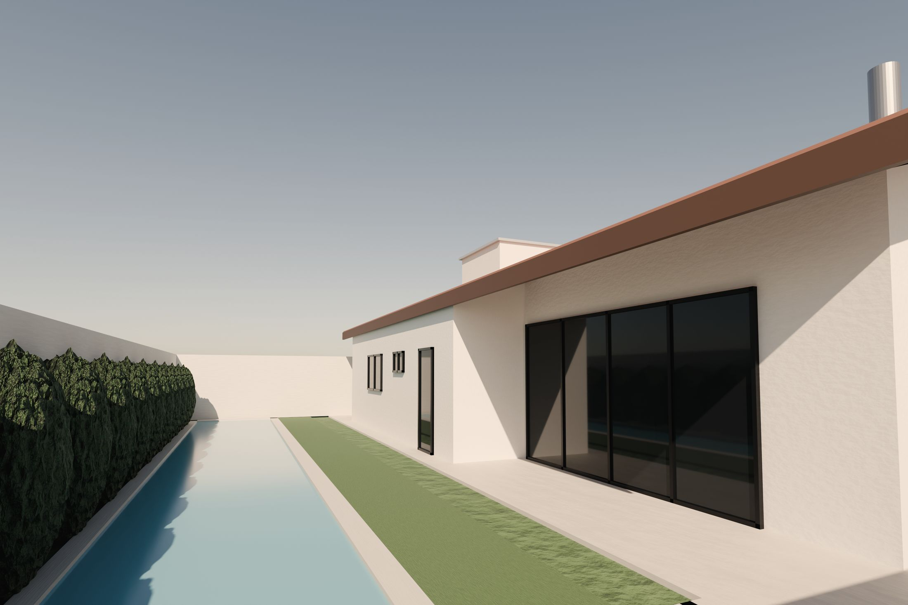
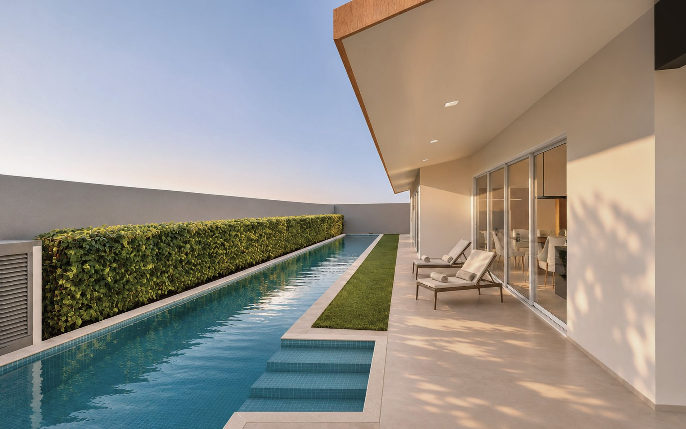

obras / casas
Casa da Raia

Casa térrea de duas águas, com uma raia de 18 m ao longo do lote.
- Local
- Marília, SP
- Área
- 184,60 m²
- Sistema
- Alvenaria, com telhado sobre treliças em steel frame
- Escopo
- Projeto executivo em BIM, sobre arquitetura de arquiteto parceiro
- Etapa
- Projeto · 2026
Interiores


Área externa

